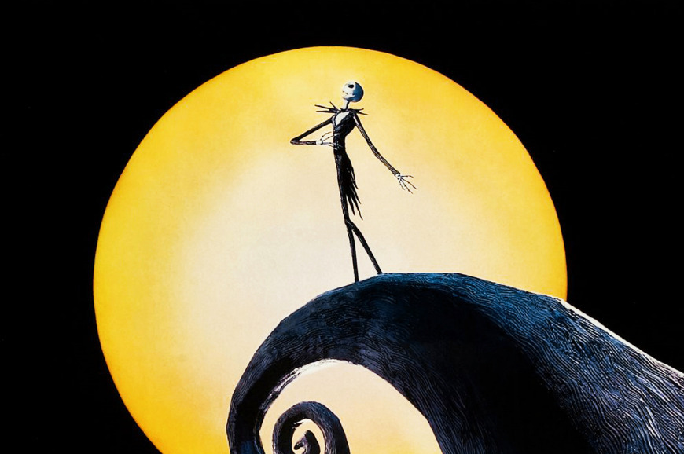
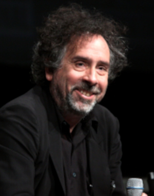

O Estranho Mundo de Jack
O Estranho Mundo de Jack, história que inspirou o filme com o mesmo título, é já um clássico infantil e conta-nos a história de Jack Esquelético numa assustadora véspera de Natal.
Uma noite, enquanto passeia entediado na floresta de Halloween, Jack encontra algo que nunca vira antes: uma porta esculpida numa árvore. Ao abri-la, Jack entra no mundo alegre e cintilante da Cidade do Natal. Maravilhado com tanta luz e animação, Jack decide raptar o Pai Natal e levá-lo para Halloween, planeando as mais medonhas traquinices para a véspera de Natal. Um mundo fantástico e irreverente que promete tantas gargalhadas como sustos!
Personagens Principais
Diretor e Criador - Tim Burton
Tim Burton nasceu em Burbank, Califórnia (EUA), e é diretor, produtor e roteirista de cinema, além de ilustrador. Depois de estudar animação no California Institute of Arts, começou sua carreira como animador dos estúdios Disney e se tornou conhecido pela criação de filmes esteticamente impressionantes, que misturam temas de fantasia e horror, incluindo Os fantasmas se divertem, Edward Mãos de Tesoura, Batman: O Retorno, O estranho mundo de Jack, A noiva cadáver e A fantástica fábrica de chocolate. Burton já concorreu a dois Oscars de Melhor Animação (por Noiva Cadáver e Frankenweenie), ao Globo de Ouro de Melhor Filme, por Sweeney Todd: O Barbeiro Demoníaco da Rua Fleet, e já ganhou diversos prêmios em festivais de cinema do mundo todo, como o de Veneza, por Noiva Cadáver.